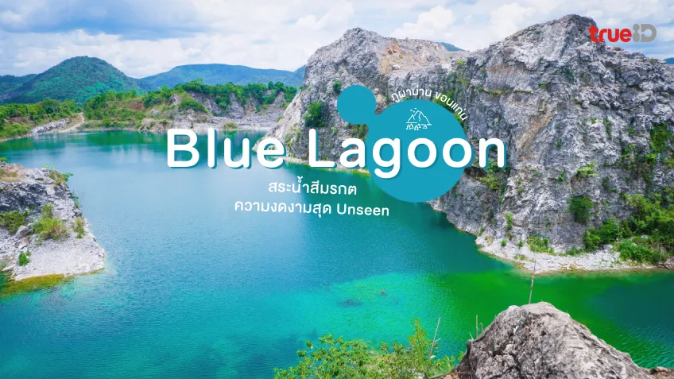

Blue Lagoon แหล่งท่องเที่ยวสุด Unseen แห่งใหม่ที่
บ้านสองคอน ตำบลนาฝาย อำเภอภูผาม่าน จังหวัดขอนแก่น
มีลักษณะเป็นสระน้ำสีฟ้ามรกตขนาดใหญ่รายล้อมไปด้วยภูเขาหินปูน มีความลึกถึง
70 เมตร ซึ่งเกิดจากการปล่อยน้ำหลังจากการเลิกทำเหมืองหินของโรงโม่หิน
ทำให้มีน้ำขังทั่วบ่อ มีสีฟ้ามรกตใสสะอาด
ตัดกับภูเขาหินปูนสีเทาที่มีลักษณะคล้ายหุบเหวได้อย่างลงตัว
| สินค้า | ราคา | |
|---|---|---|
| ส้มตำ | จานหลัก | 50 |
ดูแผนที่:
พิกัด
ติดต่อเรา
กลับด้านบน